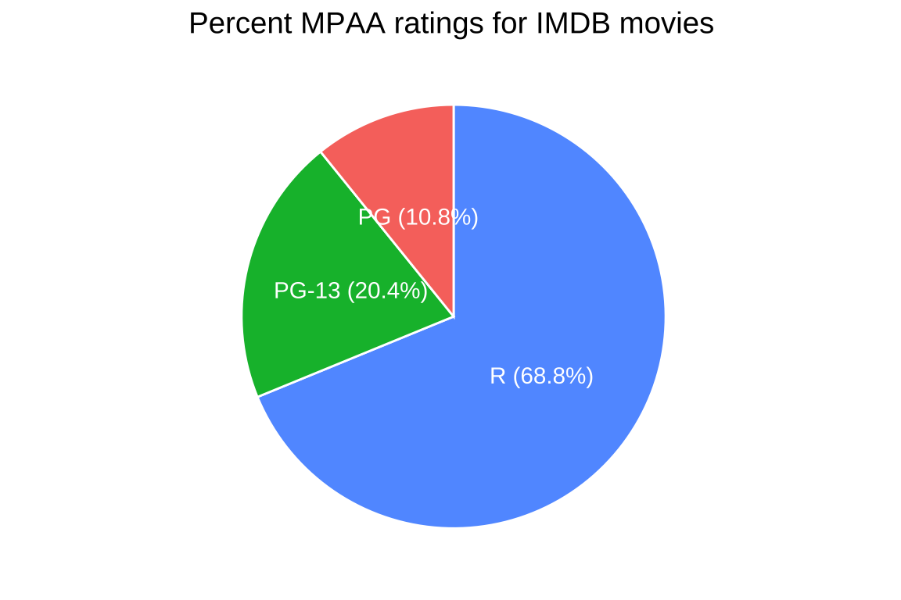

Pie charts
Description
“In general, pie charts work well when the goal is to emphasize simple fractions, such as one-half, one-third, or one-quarter.”
“They also work well when we have very small datasets.” - Claus O. Wilke, Fundamentals of Data Visualization (2019)
Pie-charts are ideal for comparing the proportions of categorical variable values, and we can build pie-charts using the ggpubr package.